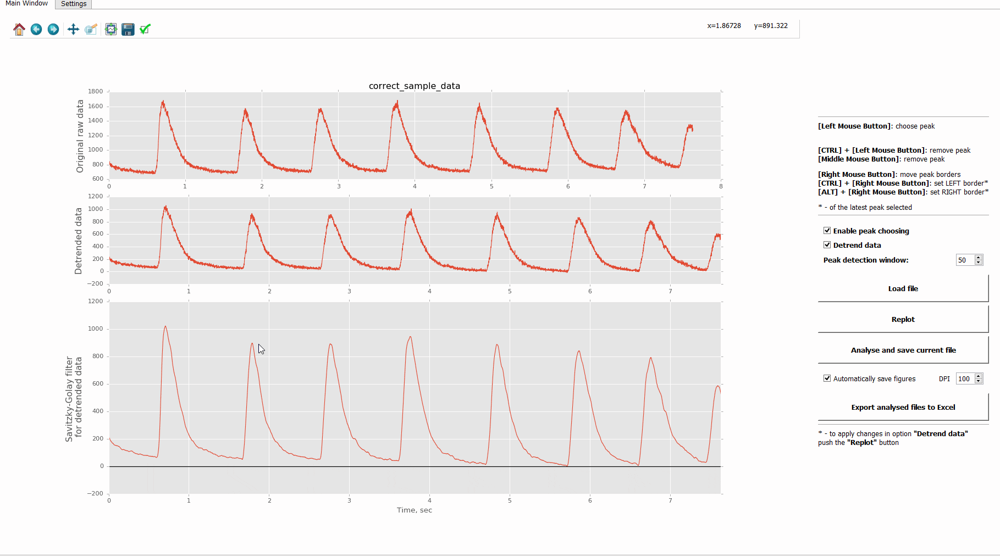

PeakInspector represents a simple standalone GUI-driven application for interactive analysis of peak properties in time-series data. PeakInspector allows to preprocess data before the analysis by baseline normalising, linear detrending (optionally) and smoothing data (by Savitzky–Golay filter). For the full list of a peak properties which could be currently analysed by PeakInspector please refer to this checklist.
PeakInspector is written by A.Salykin, PhD (Masaryk University) and distributed under the Creative Commons Attribution-ShareAlike 4.0 International License.
Beta-release 11.01.2016
The first beta-version of PeakInspecor is available. New features will be added in the near future. To report a bugs, discuss this software or suggest new features please directly contact the author: a{dot}salykin[at]mail{dot}muni{dot}cz.
Requirements
PeakInspector is written in Python 3.x, and generally platform-independent. The following packages are required:
- PyQt4
- numpy
- scipy
- matplotlib
Installation
Download .zip archive, or clone this repository, navigate to the folder PeakInspector and execute PeakInspector.py from command line:
python PeakInspector.py
Working with PeakIspector
PeakInspector's GUI is divided into 2 parts (tabs) - "Main Window" and "Settings". Short explanation of the settings on the graphical interface could be obtained by simple cursor-over the option and waiting for 1-2 seconds. Explanation tip will automatically pop-up.
Load data
Analyse peaks
- Time of the peak maximum
- Time of the left peak border
- Time of the right peak border
- Peak start value (ordinate)
- Peak end vale (ordinate)
- Absolute amplitude (according to the normalized baseline, which is 0)
- Absolute amplitude maximum (for the current dataset)
- Absolute amplitude %
- Normalised amplitude (to the original baseline)
- Normalised amplitude maximum
- Normalised amplitude %
- Period (time between 2 nearest maxima)
- Frequency (1/period)
- Half-decay time
- Half-decay amplitude
- Time to peak (ascending time, or time from left peak border to peak maximum)
- Decay time (from peak maximum to right peak border)
- Full peak time
- AUC (area under the curve, or peak area)
- Frequency (Hz) of big peaks in current data file (with % absolule amplitude >=0.66)
- Frequency (Hz) of medium peaks in current data file (with % absolule amplitude >=0.33 and <0.66)
- Frequency (Hz) of small peaks in current data file (with % absolule amplitude <0.33)
Save ouput
Data file could be loaded by simple click on "Load file" button. File should be in text format, and contain 1 (time invariant, data indeces will be considered on time scale) or 2 columns of data (in case when time is specifically recorded). Delimiter between columns is explicitly chosen in the Settings tab. Example datafile may be found in the folder "Sample_data".
If data contain header, or any additional information at the beginning or end of the file user should skip this rows by specifying how many rows to skip in the Settings tab.
Dy default the option "Detrend data" is enabled. As well as options for Savitzky–Golay filter are also specified (in the Settings tab). If not needed, user can disable "Detrend data" option, as well as change parameters for Savitzky–Golay filter. To see the changed graphical ouput user have to press the "Replot" button.
The general procedure of peak analysis include clicking by the left mouse button near the peak local maximum (with enabled option "Enable peak choosing"). PeakInspector automatically search for the true local peak maximum (taking into account the option "Peak detection window", which specifies the "distance" in data points withing which the peak maximum will be searched from the initial user click). Along with that, PeakInspector will try to find where peak starts and ends (based on the proximity points to baseline), and calculate properties of the peak, which include:
User can interactively move the peak borders (start and end points of the peak) by simply drag the corresponding point by right mouse button. In other, currently more convinient way, user can explicitly point to the region where borders shoud be by pressing CTRL+Right mouse button for the peak start, and ALT+Right mouse button for the peak end point, BUT only for the last chosen peak.
After every interaction with the graph the picure will be updated, as well as all peak parameters will be automatically recalculated in real time.
All files analysed are considered as a batch (one treatment, one biological repetition, etc), and clicking on the button "Analyse and save file" will save currenly analysed file into table inside PeakInspector. This will add analysed data to previously analysed files, if any. To save the all analysed peak from the batch as a table (for now the default, and only, output is Excel file) user have to click the "Export analysed files to Excel".
In the Settings tab there is an option to specify the desired peak features which user would like to see in Excel file. These options have to be chosen ones per all currently analysing files.
In addition, along with saving every file with "Analyse and save file" button, the graphical output of data and analysed peaks (basically, what user will see on the graph) will be saved into the automatically created "_Figures" folder in the folder where user will have the PeakInspector.py file. User can disable this option, or change the figures DPI.
Features to be added in the future
- Choosing desired output format (xlsx, scv, etc)
- More smooth experience with the dragging peak border poins by right mouse button
- Add other parameters of peaks to analyse